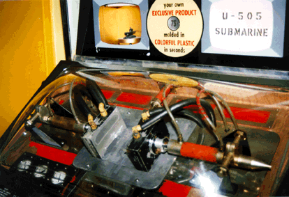

History, etc.
Data and background information on the technical marvel that is Mold-A-Rama has been difficult to come by. So far, we are only certain that Mold-A-Ramas are in operation in Chicago's Brookfield Zoo, Museum of Science & Industry and Field Museum, the Milwaukee Zoo, and at least one in Hollywood.
A good article was written by freelancer Jim Mueller, which appeared in the Chicago Tribune ("All star casts: The Mold-A-Rama tradition of plastic Lincoln Heads and zoo animals lives on." Tempo section, p. 1, July 26, 1993). You can read the entire article at any Chicago area library or microfilm or on the Trib's CD-ROM index, or download it for a fee from the Trib's web site. It's doubtful, though, knowing the Trib's current policy on compensating freelancers, that Mr. Mueller receives a portion of the Trib's download fee, so I don't recommend that route.
Some basic facts from that article are presented here, however:
Mold-A-Rama was developed in the mid-1950's by Tike Miller of Phoenix. He licensed the invention to the Automatic Retailers Association, which installed and serviced Mold-A-Rama machines, reaching a height of over 200 machines around the country. The ARA decided to drop Mold-A-Ramas after eight years, but an employee, Roy Ward, negotiated to buy them out. By 1967, he and a few other independent operators owned all the machines. Ward decided to retire in 1969, and sold his business to Bill Jones, who now owns and operates 70 machines. Besides the Chicago locations, Jones has machines—mostly in zoos—in Oklahoma, Tennessee and Wisconsin. The other major operator is based in Florida.
When you operate a Mold-A-Rama, polyethelene plastic at 250 degrees is pumped through a pipe at the bottom of the mold. A second pipe then blows cold air to force the plastic into the crevices of the mold. The plastic hoses which give the machine that cool techno-Frankenstein look, pump automotive antifreeze to cool the mold quickly.
The least successful mold at the Museum of Science and Industry was a model of Colleen Moore's fairy castle. The proper details just couldn't be reproduced. Successful molds include busts of Abraham Lincoln, the U-505 submarine, a steam locomotive and the Space Shuttle.
Nearly all parts for the machines are now cobbled together by hand or from off-the-shelf parts. Molds for new items can still be produced, and most of the can be kept up for now. Why not stop by your favorite museum or zoo and drop three quarters to keep this great quirky and cheap souvenir attraction going!
